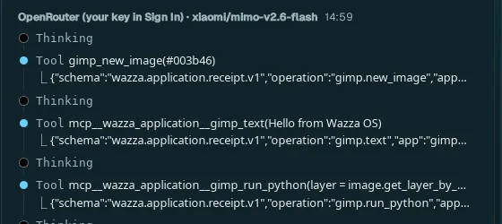
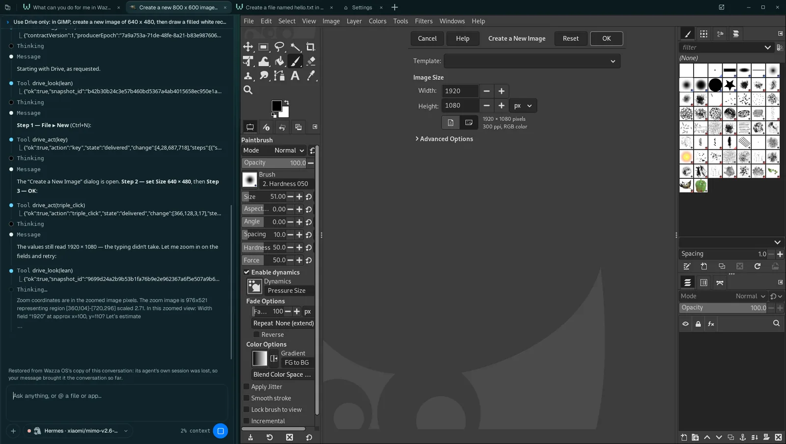

Drive: agents on screen
Drive lets the agent of a tab look at its app as a picture and use it with the mouse and the keyboard, like you would: open menus, fill dialogs, drag, draw, type. Any app becomes something an agent can operate, even one with no tools for agents, and you watch every step happen in the tab.
Tools first, Drive for the rest#
Many apps give agents their own tools (GIMP, Blender, ONLYOFFICE, the browser…): a tool does one operation exactly and fast, so the agent uses it first. Drive is for what no tool covers (a dialog, a menu, a drawing, an app with no tools), and for when you ask for it: say "use Drive" or "Drive only" and the agent uses nothing else. The same image of the app also lets the agent check what a tool did.

Ask an agent to use Drive#
Open the app's tab (Home › Apps › the app) and use its Chat, on the left of the app.
Say what to do, as precisely as you would to a person: which menu, which values, which file. Add Use Drive only to make it work through the window.
Watch: each step shows in the Chat (drive_look: it took a picture; drive_act: it clicked, typed or pressed keys) and happens in the app on the right.
Step in at any time: Stop ends the turn; you can click in the app yourself, then tell the agent to go on.

1 2 3 4 5Your request, pinned at the top of the Chat while the agent works.
drive_look: the agent takes a fresh picture of the app before it acts.
drive_act: one chunk of work (here a key: Ctrl+N for File › New).
After each act the agent gets the screen as it settled and checks it: here it sees the size did not change, says so, zooms in on the fields and tries again.
The app, live: the dialog the agent opened.
What Drive can do#
| Ability | What the agent does with it |
|---|---|
| Look | A picture of the tab's app (the VM's screen). It can zoom on a region, draw a grid on it to aim, take a small fast view, or a short clip of several frames (to follow something that moves). |
| Read the screen | The words on the view (read by text recognition) and the named parts of the app (buttons, fields), each with its place, so it aims at Save rather than at guessed pixels. |
| Click and drag | Left, right or double clicks; drags from one point to another; at a place, or at a word or a colour found when the step runs. |
| Type and press keys | Text, and key names or shortcuts (Return, Ctrl+S). |
| Draw | Holds the button along a shape: a circle, an ellipse, an arc, a rectangle, a line, a polygon or any points, at a chosen speed (in a paint, 3D or design app). |
| Chain steps | Up to 11 steps in one act (63 when they draw, wait or repeat), run in order on the live screen: a whole dialog filled in one go, each step aimed when it starts. |
| Wait | Until the screen settles, changes, or a word or colour appears or goes. |
| Listen | The tab's own sound for a few seconds (to check a video or a game plays sound). |
| Record | A recording of the tab while it acts (1 to 8 frames a second, up to 10 minutes; frames are kept only when something changes), with a mark at each action: to show you what it did, as a contact sheet or frame by frame. |
| Recover | When looks keep failing on a tab, it resets what is stuck between Wazza OS and the tab (the picture's stream, the tab's service) without sending any input, then looks again. |
The agent's terminal (a text view) and, with Computer Control, your own computer's windows are Drive "seats" too. Every agent in Wazza OS has Drive, whatever its model, as long as the model takes images.
What you see, and what stays yours#
- Your view never changes. Drive works in the agent's own tab, shown or not: it never brings the tab to the front or switches yours. A Drive agent in a background tab works while you use another tab.
- Your mouse and keys win. If you click in the app while the agent works, your input goes in; to watch without getting in the way, use Desktop menu › Lock input.
- Irreversible steps do not ask. Agents in Wazza OS work without asking you, including steps that cannot be undone (deleting, sending, paying). When you want to approve such a step, say so in your message: "ask me before you send anything".
- Several agents, one screen. Hidden helper agents of a Chat can use Drive on its tab too: their steps take turns with the main agent's, never at the same time.
- Delivery is not proof. An act reports what it sent; the agent checks the next picture to know the effect, and an uncertain step is never sent twice.
Tips for good results#
- Name the menus and values: "File › Export As…, PNG, 1920 pixels wide, save in Pictures" works better than "export it".
- Prefer a model that sees images well. A small or fast model takes more tries on dialogs (the screenshot above shows a retry).
- Give the app room: a larger tab (fold the Chat, or a bigger VM screen size) shows more of the app to the agent.
- When an app has tools, let the agent use them: say "Drive only" only when you want to see it done by hand.
Limits#
- Drive works on the app of the agent's own tab. Work in another app is done by an agent in that app's tab (Several agents at once).
- It needs a model that takes images (most current models do). With a text-only model, Drive cannot see.
- Each picture is valid for 5 minutes and one action: the agent always acts on a fresh view, so a fast-changing app (a game, a video) is worked with clips and waits.
- Text the agent types goes in as key presses: a field that refuses typing (as in the screenshot above) needs another way (a double-click to select, a spin button, or the app's own tool).